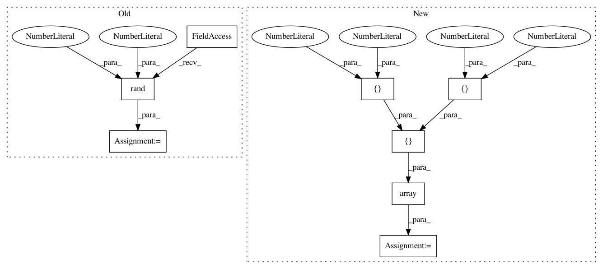

1f38858ddf7ac524f5430bdc237aa7658d664a24,dipy/viz/tests/test_fvtk_widgets.py,,test_button_and_slider_widgets,#,9
Before Change
renderer = window.Renderer()
// create some random streamlines
lines = [np.random.rand(2, 3), np.random.rand(3, 3)]
colors = np.array([[1., 0., 0.], [0.3, 0.7, 0.]])
stream_actor = actor.streamtube(lines, colors)
renderer.add(stream_actor)
After Change
renderer = window.Renderer()
// create some minimalistic streamlines
lines = [np.array([[-1, 0, 0.], [1, 0, 0.]]),
np.array([[-1, 1, 0.], [1, 1, 0.]])]
colors = np.array([[1., 0., 0.], [0.3, 0.7, 0.]])
stream_actor = actor.streamtube(lines, colors)
renderer.add(stream_actor)
In pattern: SUPERPATTERN
Frequency: 3
Non-data size: 8
Instances
Project Name: nipy/dipy
Commit Name: 1f38858ddf7ac524f5430bdc237aa7658d664a24
Time: 2015-05-12
Author: garyfallidis@gmail.com
File Name: dipy/viz/tests/test_fvtk_widgets.py
Class Name:
Method Name: test_button_and_slider_widgets
Project Name: geomstats/geomstats
Commit Name: fb5ddabf1cea71e36d62f1557f72b28dfa290af8
Time: 2018-12-13
Author: ninamio78@gmail.com
File Name: tests/test_matrices_space.py
Class Name: TestMatricesSpaceMethods
Method Name: test_make_symmetric_and_is_symmetric_vectorization
Project Name: geomstats/geomstats
Commit Name: ecb22f715ce7c785ef85ecbb067cf74238944a83
Time: 2018-12-12
Author: ninamio78@gmail.com
File Name: tests/test_matrices_space.py
Class Name: TestMatricesSpaceMethods
Method Name: test_make_symmetric_and_is_symmetric_vectorization